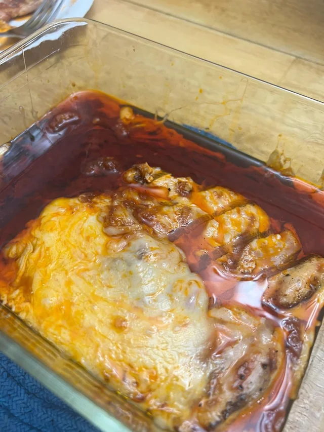

Chicken Parmesan

Ingredients For Chicken Parmesan
This recipe is enough for 4 people.
- 4 skinless, boneless chicken breast halves
- salt and freshly ground pepper to taste
- 2 large eggs
- 1 cup panko bread crumbs (whatever you want really.)
- 3/4 cup grated Parmesan cheese
- 2 tablespoons all-purpose flour OR more as needed
- 1/2 cup olive oil for frying
- 1/2 cup prepared tomato sauce
- 1/4 fresh mozzarella
- 1/4 cup chopped fresh basil
- 1/2 cup grated provolone cheese
- 2 teaspoons olive oil
Cooking Instructions
- Gather ingredients. Preheat over to 450 degrees F
- Cover the chicken in plastic and beat the everloving shit out of it
- Sprinkle with salt and pepper. Sift flour over the chicken
- Beat eggs in a shallow bowl and set aside, Mix crumbs and 1/2 cup parmasan cheese in a separate bowl, set aside.
- Dip a flour-coated chicken breast in beaten eggs. Transfer breast to the bread crumb mixture, pressing into both crumbs.
- Repeat for each breast. Let chicken rest for 10-15 minutes.
- Heat 1/2 inch olive oil in a large skillet on medium-high heat until it begins to shimmer.
- Cook chicken in the hot oil until golden, about 2 minutes per side. The chicken will finish cooking in the oven.
- Transfer chicken to a baking dish. Top each breast with 2 tablespoons tomato sauce.
- Layuer each chicken breast with equal amounts of mozzarella cheese, fresh basil, and provolone cheese. Sprinkle remaining parmesan over top, drizzle with olive oil.
- Bake in the preheated oven until cheese is browned and bubbly and chicken breasts are no longer pink in the center, 15-20 minutes. Needs an internnal temp of at least 165 F
- Hope that God has mercy on your chicken.
Back To Odin's Recipes!
Tenderize that cock a little more, sir.